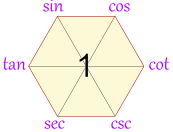
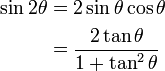
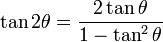
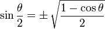
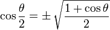
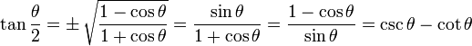
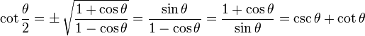

Trigonometric Identities
You might like to read about Trigonometry first!
Right Triangle
The Trigonometric Identities are equations that are true for Right Angled Triangles. (If it is not a Right Angled Triangle go to the Triangle Identities page.)
Each side of a right triangle has a name:


Adjacent is always next to the angle
And Opposite is opposite the angle
We are soon going to be playing with all sorts of functions, but remember it all comes back to that simple triangle with:
- Angle θ
- Hypotenuse
- Adjacent
- Opposite
Sine, Cosine and Tangent
The three main functions in trigonometry are Sine, Cosine and Tangent.
They are just the length of one side divided by another
For a right triangle with an angle θ :

Sine Function: |
sin(θ) = Opposite / Hypotenuse |
Cosine Function: |
cos(θ) = Adjacent / Hypotenuse |
Tangent Function: |
tan(θ) = Opposite / Adjacent |
For a given angle θ each ratio stays the same
no matter how big or small the triangle is
When we divide Sine by Cosine we get:
sin(θ)cos(θ) = Opposite/HypotenuseAdjacent/Hypotenuse = OppositeAdjacent = tan(θ)
So we can say:
tan(θ) = sin(θ)cos(θ)
That is our first Trigonometric Identity.
Cosecant, Secant and Cotangent
We can also divide "the other way around" (such as Adjacent/Opposite instead of Opposite/Adjacent):
Cosecant Function: |
csc(θ) = Hypotenuse / Opposite |
Secant Function: |
sec(θ) = Hypotenuse / Adjacent |
Cotangent Function: |
cot(θ) = Adjacent / Opposite |
Example: when Opposite = 2 and Hypotenuse = 4 then
sin(θ) = 2/4, and csc(θ) = 4/2
Because of all that we can say:
sin(θ) = 1/csc(θ)
cos(θ) = 1/sec(θ)
tan(θ) = 1/cot(θ)
And the other way around:
csc(θ) = 1/sin(θ)
sec(θ) = 1/cos(θ)
cot(θ) = 1/tan(θ)
And we also have:
cot(θ) = cos(θ)/sin(θ)
Pythagoras Theorem
For the next trigonometric identities we start with Pythagoras' Theorem:
 |
The Pythagorean Theorem says that, in a right triangle, the square of a plus the square of b is equal to the square of c: a2 + b2 = c2 |
Dividing through by c2 gives
a2 c2 + b2 c2 = c2 c2
This can be simplified to:
( a c )2 + ( b c )2 = 1
Now, a/c is Opposite / Hypotenuse, which is sin(θ)
And b/c is Adjacent / Hypotenuse, which is cos(θ)
So (a/c)2 + (b/c)2 = 1 can also be written:
sin2 θ + cos2 θ = 1
- sin2 θ means to find the sine of θ, then square the result, and
- sin θ2 means to square θ, then do the sine function
Example: 32°
Using 4 decimal places only:
- sin(32°) = 0.5299...
- cos(32°) = 0.8480...
Now let's calculate sin2 θ + cos2 θ:
0.52992 + 0.84802
= 0.2808... + 0.7191...
= 0.9999...
We get very close to 1 using only 4 decimal places. Try it on your calculator, you might get better results!
Related identities include:
sin2 θ = 1 − cos2 θ
cos2 θ = 1 − sin2 θ
tan2 θ + 1 = sec2 θ
tan2 θ = sec2 θ − 1
cot2 θ + 1 = csc2 θ
cot2 θ = csc2 θ − 1
How Do You Remember Them?The identities mentioned so far can be remembered
|
 |
But Wait ... There is More!
There are many more identities ... here are some of the more useful ones:
Opposite Angle Identities
sin(−θ) = −sin(θ)
cos(−θ) = cos(θ)
tan(−θ) = −tan(θ)
Double Angle Identities
|  |
 |
|  |
Half Angle Identities
Note that "±" means it may be either one, depending on the value of θ/2
|  |
|  |
|  |
|  |
Angle Sum and Difference Identities
Note that means you can use plus or minus, and the  means to use the opposite sign.
means to use the opposite sign.
sin(A B) = sin(A)cos(B) cos(A)sin(B)
cos(A B) = cos(A)cos(B) sin(A)sin(B)
tan(A B) = tan(A) tan(B)1 tan(A)tan(B)
cot(A B) = cot(A)cot(B) 1cot(B) cot(A)
Triangle Identities
There are also Triangle Identities which apply to all triangles (not just Right Angled Triangles)